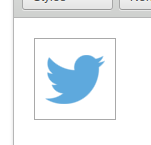

Click on the Twitter icon.
You are able to either provide a hashtag search query or a username (hash tag words should be separated by spaces). If you pick one, you must leave the other blank. Click on the Preview tab to see the tweets from the generated timeline.
You can customize the height and width of the timeline, as well as the maximum number of tweets to display.
Click OK to embed the timeline at the current cursor position.

Right click the placeholder and click the 'Edit Timeline' option to edit the current timeline's properties again.